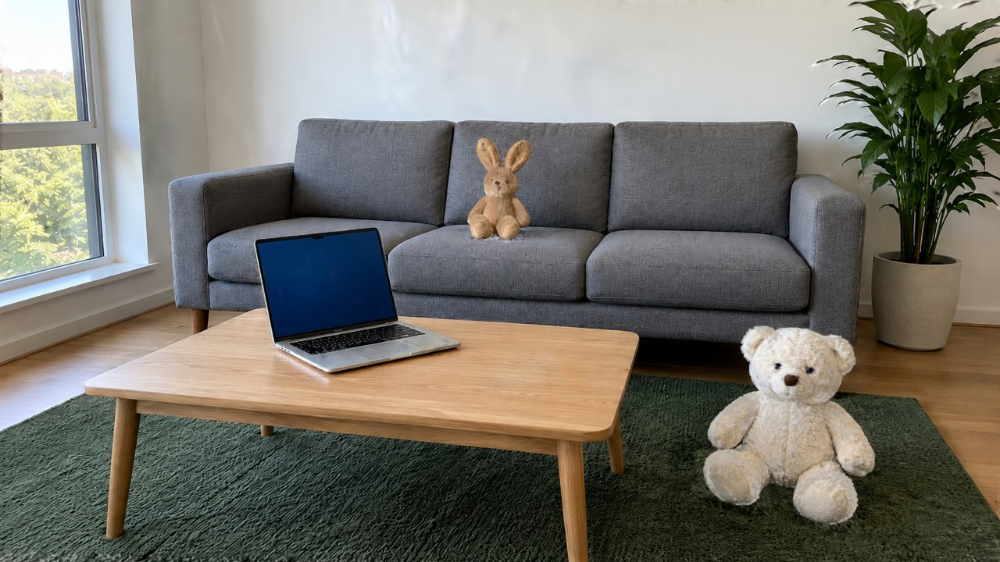
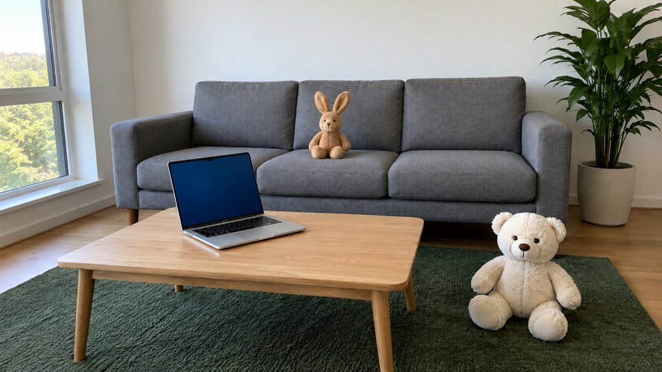
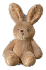
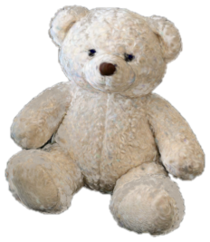
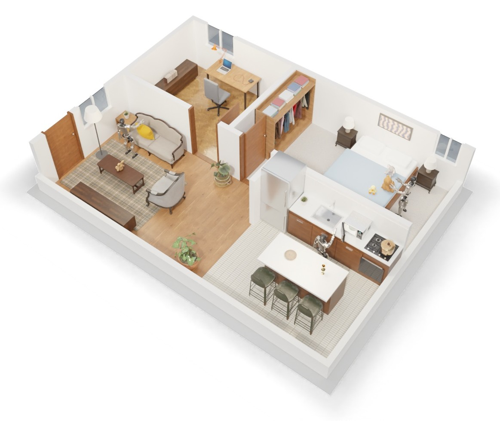
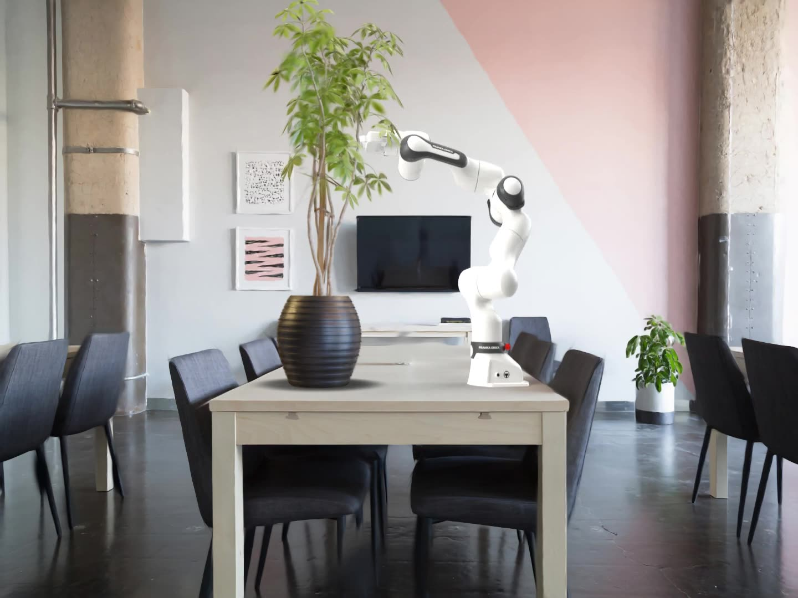
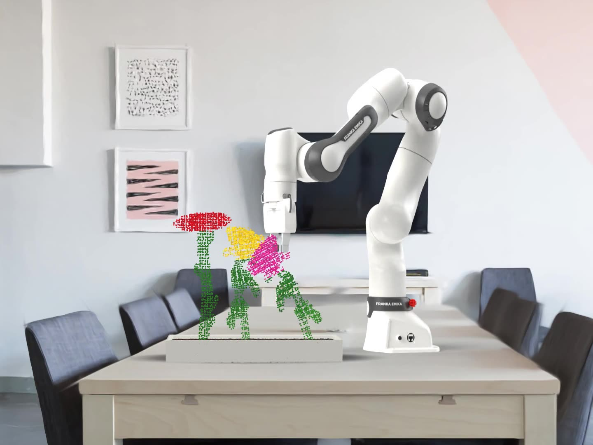
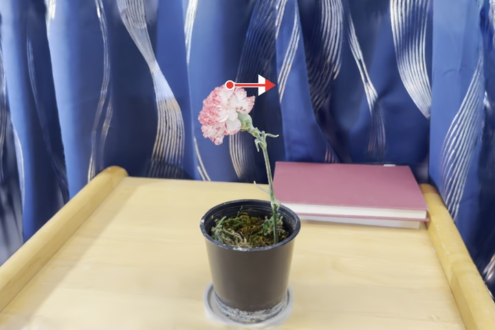

Static 3D objects that move, deform, and respond.
1University of British Columbia 2University of Toronto 3Stanford University 4Yonsei University 5NVIDIA *Corresponding authors




Input photo One photo → a generated world



@misc{huang2026priopretrainedrepresentationinteractive,
title={PRIO: Pre-trained Representation for Interactive Objects in 4D Worlds},
author={Shixun Huang and Lifu Wei and Yue Chang and Chen Geng and Heng Zhang and Jinhyung Ahn and Caoliwen Wang and Siyuan Chen and Donglai Xiang and Jiajun Wu and Peter Yichen Chen},
year={2026},
eprint={2611.25500},
archivePrefix={arXiv},
primaryClass={cs.CV},
url={https://arxiv.org/abs/2611.25500},
}